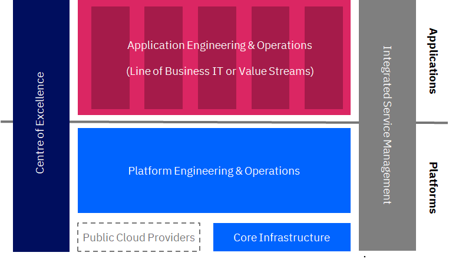

How are enterprises organising themselves in the digital and multicloud world?
Table of Contents
Overview
Modern IT functions are typically supporting the development of cloud enabled, digital products in several ways:
| 4 Pillars |
|---|
|  |
- Center of Excellence - Drives adoption and usage of cloud services in a controlled, secure and consistent way
- Advise on cloud adoption to lines of business
- Develop guardrails and standards for cloud consumption
- Curate a catalogue of cloud services approved for use within the enterprise
- Provide education and talent development
- Platform Provider - Creates a platform of business & technology services to support digital transformation
- Incubate the new technology platforms to be consumed by Digital/LoB teams
- Act as a broker and integrator across hybrid multi cloud environments
- Provide operational platform support
- Enable DevSecOps toolchain and capabilities
- Digital Product Co-creator - Partners with lines of business to compete successfully in the marketplace
- Operate on product lines towards new digital propositions
- Operate agile end to end teams
- Drive design thinking for new engineering practices
- Experiment and scale fast
- Full end to end service accountability
- Integrated Service Management - Centralised command centre to protect live service and drive service excellence across the enterprise
- Level 1/1.5 support function
- Command centre proactively monitoring services, enabled by analytics and automation
- Provides real-time reporting on service performance
- Drives service excellence across the enterprise for operations including Site Reliability best practices
These elements interact together to provide an integrate eco-system to create and operate digital products. Within each of these elements, there are various functions that support product development and operations.
| Target Operating Model - 4 Pillars |
|---|
 |
Center of Excellence
The role of the Centre of Excellence is to drive cloud adoption through governance, to build communities and advise on consumption and usage to meet business requirements:
- Sets guardrails and policies to provide choice and agility, without comprising security and compliance
- Sets technical architecture and guidelines for development of products and services
- Delivers education to product teams with line of business and cloud/infrastructure platform teams
- Promote asset reuse, best practices and recommendations
- Manages communities to encourage collaboration
- Provide advice on sourcing and vendor selection
- Deliver professional services to support and augment product teams
Platform Provider
The role of Platform Provider (Platform Engineering & Operations) is to develop and operate cloud, technology and infrastructure products for use across the enterprise:
- Develops and operates enterprise wide services technical services to be consumed by lines of business IT or value streams
- Develops services on public and private cloud
- Manage end-to-end lifecycle of platform services
- Manage performance and capacity of platform services
- Develop and operate shared tooling services for consumption across the enterprise
- Providers data platform services for consumption across the enterprise
- Develops and operates integration services including API publishing and management
- Manages and maintains the core infrastructure including network, physical infrastructure and data centres
Digital Product Co-creator
The role of Digital Product co-creator (Application Engineering & Operations) is to develop and operate business and application services to deliver customer and business outcomes:
- Develops and operates business and application services
- Focused on delivering business outcomes and creating new customer/consumer experiences
- Help re-defining business process and workflows to deliver better outcomes
- Work in cross-functional, agile teams working in conjunction with business users
- Manages the end-to-end lifecycle of business and application services
- Have overall end-to-end service responsibility
- Consume and utilise products and services developed and operated by platform teams
- Optimise business service/application performance and service levels
Integrated Service Management
The role of Integrated Service Management is to provide centralised first line support, Operations Command Centre and driving service management excellence across the organisation:
- Provides level 1/1.5 support capability across applications and platforms
- Operations Command Centre providing centralised monitoring and enabled by analytics and automation
- Drive service excellence across the organisation for incident, problem and change management
- Managing configuration and asset management across the organization to have a fully integrated view of all assets within the IT estate
- Provide centralised real-time reporting and dashboarding capability on service performance